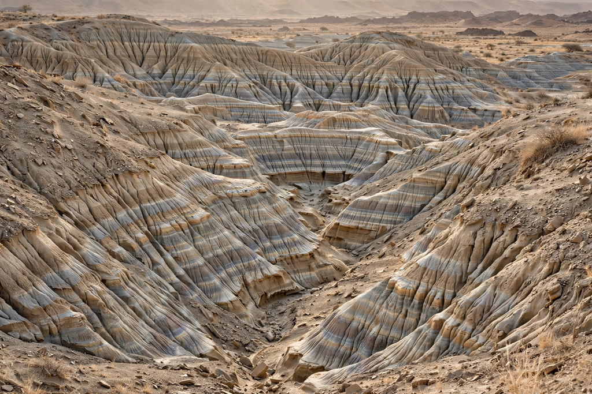

| Hadar | |
|---|---|
 | |
| Location | Afar Region, Ethiopia |
| Coordinates | approx. 11.1° N, 40.6° E |
| Famous find | "Lucy" (AL 288-1), 1974 |
| Age of deposits | about 3.4 – 2.9 million years |
Hadar (also spelled Adda Da'ar) is a village and archaeological locality in the Afar Region of Ethiopia, in the lower Awash River valley of the Afar Triangle. The Hadar Formation's fossil-bearing sediments, laid down in an ancient lake basin, have yielded some of the most important evidence for early human evolution, above all the remains of Australopithecus afarensis.
Surveying began in 1970 under Maurice Taieb and Yves Coppens. In 1973 the team found a 3.2-million-year-old hominin knee joint, and in November 1974 Donald Johanson and Tom Gray discovered "Lucy" (AL 288-1), a roughly 40%-complete female A. afarensis skeleton that demonstrated upright walking in a small-brained hominin. The "First Family" (AL 333), a group of at least 17 individuals who may have died together about 3.2 million years ago, followed in 1975. Later finds include the large male skull ("Kada Hadar") and stone tools and cut-marked bones dated to about 3.4 million years, among the oldest evidence claimed for butchery.
The Hadar Formation consists of lake and floodplain mudstones, siltstones and volcanic ash layers whose argon–argon dates bracket the fossils precisely. Nearby localities in the Afar — Dikika, where the child fossil "Selam" was found, and Lomekwi across the border in Kenya — make the region central to the study of Plio-Pleistocene hominins, pursued for decades by Tim White and others in the Middle Awash.